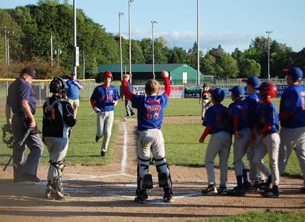
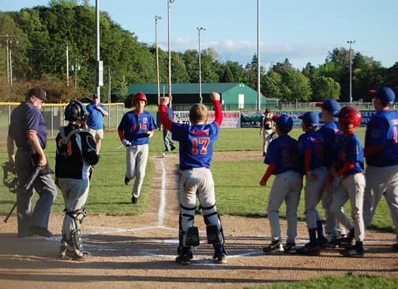

About Me
Hello! I’m Jordan Wood, an aspiring Java developer eager to make my mark in the software development world.
I grew up in a small town called Centralia, Washington, a place so small you could drive through it in just a few minutes. I was raised by my dad alongside my three siblings, and we lived what I considered a regular, down-to-earth life. Baseball was a huge part of my upbringing; it was the glue that held our family together. Some of my best memories come from the baseball field. I started playing tee-ball at the age of five and continued through high school, learning valuable lessons about teamwork, leadership, and perseverance along the way. One of my proudest achievements was receiving the 2014 Babe Ruth Baseball Gold Glove Award (14U) and helping my team earn third place at the World Series.
After graduating high school, I wasn’t entirely sure where I wanted to go in life. College seemed out of reach without a scholarship, so I spent the next few years working full-time jobs, trying to figure out my path. Deep down, I knew I wanted more, something meaningful that I could build a future around.
I had always been fascinated by computers, electronics, and video games, and that curiosity eventually led me to community college, where I pursued an Associate of Arts in Computer Science. Programming didn’t come easily at first; it was challenging, and I often found myself seeking help just to grasp the fundamentals. But I stuck with it, worked hard, and eventually graduated on the Dean’s List every semester.
From there, I continued my education at Grand Canyon University, majoring in Software Development. Along the way, my interest in cybersecurity grew, leading me to earn several professional certifications and develop a strong understanding of IT and security fundamentals. I even took on an IT Support internship, where I quickly learned that while I valued the experience, my true passion was coding and software creation, not working the help desk.
After graduating, I made the decision to fully commit to what I love most: developing applications. I dove back into Java, spending countless hours relearning and practicing through sites like CodingBat, CodeStepByStep, and LeetCode. My hard work reignited my confidence and pushed my skills to new heights.
Today, I’m an aspiring software developer with a strong foundation in both Java and cybersecurity, driven by a passion for building applications that make a real-world impact. More importantly, I want to use my journey of perseverance and growth to show my two daughters that with dedication and hard work, you can achieve anything you set your mind to. My goal is to continue learning, growing, and creating software that not only solves problems but also inspires others to pursue their dreams.